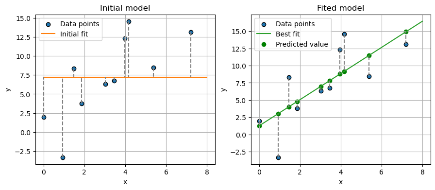
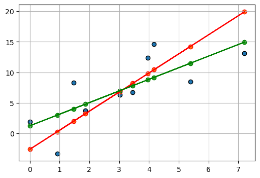
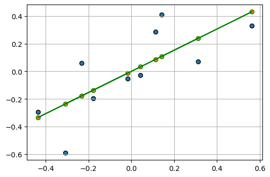
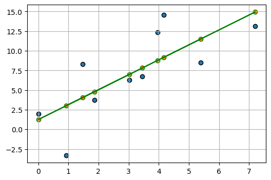
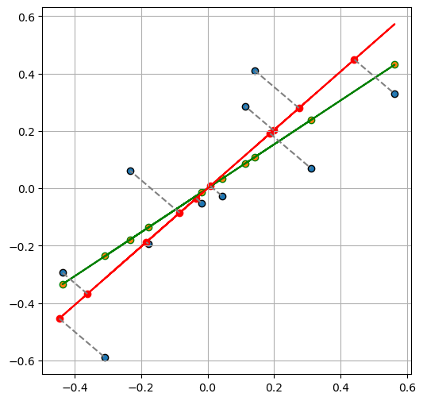

import numpy as np
import scipy as sp
import matplotlib.pyplot as plt
from sklearn.linear_model import LinearRegressionn_datapoints = 10
np.random.seed(1)
x = 10 * np.random.rand(n_datapoints)
y = 2 * x + 1 + (3 * np.random.randn(n_datapoints))ols_model = LinearRegression(fit_intercept=True)
ols_model.fit(x[:, np.newaxis], y)
# get prediction
y_pred = ols_model.predict(x[:, np.newaxis])
residual = y - y_pred
# get prediction for best line fit
xfit = np.linspace(0, 8, 50)
y_ = ols_model.predict(xfit[:, np.newaxis])
fig, axs = plt.subplots(1, 2, figsize=(10.5, 4))
ax = axs[0]
ax.scatter(
x,
y,
label="Data points",
edgecolors="k",
)
# plot data
ax.plot(
[0, 8],
[y.mean(), y.mean()],
color="#ff7f0e",
label="Initial fit",
)
for i in range(len(x)):
ax.plot(
[x[i], x[i]],
[y[i], y.mean()],
color="gray",
linestyle="--",
)
ax.grid(True)
ax.set_xlabel("x")
ax.set_ylabel("y")
ax.legend()
ax.set_title("Initial model")
ax = axs[1]
ax.scatter(
x,
y,
label="Data points",
edgecolors="k",
)
# plot best line fit
ax.plot(
xfit,
y_,
color="#2ca02c",
label="Best fit",
)
# Optionally, plot residuals (errors)
for i in range(len(x)):
ax.plot(
[x[i], x[i]],
[y[i], y_pred[i]],
color="gray",
linestyle="--",
)
ax.scatter(
x, y_pred, color="green", label="Predicted value"
) # If you want to show where the predicted points lie on the line
ax.annotate(
"residual",
xy=(1, -10),
xycoords="data",
xytext=(0.2, 0.1),
textcoords="axes fraction",
va="top",
ha="left",
fontsize=16,
arrowprops=dict(
arrowstyle="->",
facecolor="black",
),
)
ax.grid(True)
ax.set_xlabel("x")
ax.set_ylabel("y")
ax.set_title("Fited model")
ax.legend()
plt.show()
data = sp.odr.Data(x, y)
def linear_model(w, x):
return w[0] + (w[1] * x)
model = sp.odr.Model(linear_model)
myodr = sp.odr.ODR(data, model, beta0=[0.1, 0.5])
myoutput = myodr.run()
myoutput.pprint()Beta: [-2.6044511 3.1248936]
Beta Std Error: [3.21297347 0.90341949]
Beta Covariance: [[ 4.95263004 -1.23196863]
[-1.23196863 0.39156198]]
Residual Variance: 2.0843871730397523
Inverse Condition #: 0.11473302487938446
Reason(s) for Halting:
Sum of squares convergencefig, ax = plt.subplots(1, 1, figsize=(6, 4))
ax.scatter(
x,
y,
label="Data points",
edgecolors="k",
)
ax.scatter(
x,
linear_model(myoutput.beta, x),
# label="Data points",
edgecolors="r",
)
ax.plot(
x,
linear_model(myoutput.beta, x),
# label="Data points",
color="r",
)
ax.scatter(
x,
y_pred,
# label="Data points",
edgecolors="green",
)
ax.plot(
x,
y_pred,
color="green",
)
ax.grid(True)
Test with centered data
def centering(Z: np.ndarray) -> np.ndarray:
Z_min = Z.min(0)
Z_max = Z.max(0)
Z_norm = (Z - Z_min) / (Z_max - Z_min)
Z_means = Z_norm.mean(axis=0, keepdims=True)
def reverse_centering(Z_centered: np.ndarray) -> np.ndarray:
Z_norm = Z_centered + Z_means
Z = Z_norm * (Z_max - Z_min) + Z_min
return Z
return Z_norm - Z_means, reverse_centering
Z = np.column_stack((x, y))
Z_centered, reverse_centering = centering(Z)
Z, Z_centered(array([[ 4.17022005e+00, 1.45748754e+01],
[ 7.20324493e+00, 1.31228692e+01],
[ 1.14374817e-03, 1.95940478e+00],
[ 3.02332573e+00, 6.29854033e+00],
[ 1.46755891e+00, 8.32144163e+00],
[ 9.23385948e-01, -3.33365023e+00],
[ 1.86260211e+00, 3.75795262e+00],
[ 3.45560727e+00, 6.75905148e+00],
[ 3.96767474e+00, 1.23366578e+01],
[ 5.38816734e+00, 8.47666088e+00]]),
array([[ 0.14217059, 0.41027917],
[ 0.56330115, 0.32920012],
[-0.43669885, -0.29416021],
[-0.01707382, -0.0518658 ],
[-0.2330895 , 0.06109164],
[-0.30864703, -0.58972083],
[-0.1782384 , -0.19373051],
[ 0.04294777, -0.02615117],
[ 0.1140475 , 0.28529861],
[ 0.31128058, 0.06975898]]))Z_ = reverse_centering(Z_centered)
assert ((Z - Z_) < 1e-10).all()Z_centeredarray([[ 0.14217059, 0.41027917],
[ 0.56330115, 0.32920012],
[-0.43669885, -0.29416021],
[-0.01707382, -0.0518658 ],
[-0.2330895 , 0.06109164],
[-0.30864703, -0.58972083],
[-0.1782384 , -0.19373051],
[ 0.04294777, -0.02615117],
[ 0.1140475 , 0.28529861],
[ 0.31128058, 0.06975898]])fig, ax = plt.subplots(1, 1, figsize=(6, 4))
ols_model_ = LinearRegression(fit_intercept=True)
ols_model_.fit(Z_centered[:, 0][:, np.newaxis], Z_centered[:, 1])
# get prediction
y_pred_ = ols_model_.predict(Z_centered[:, 0][:, np.newaxis])
ax.scatter(
Z_centered[:, 0],
Z_centered[:, 1],
label="Data points",
edgecolors="k",
)
ax.scatter(
Z_centered[:, 0],
y_pred_,
# label="Data points",
edgecolors="green",
)
ax.plot(
Z_centered[:, 0],
y_pred_,
color="green",
)
ax.grid(True)
Test revert centering: - plot predicted line based on reverted predictions - plot predicted points based on original predictions
fig, ax = plt.subplots(1, 1, figsize=(6, 4))
Z_centered_ = np.column_stack((Z_centered[:, 0], y_pred_))
Z_ = reverse_centering(Z_centered_)
ax.scatter(
Z[:, 0],
Z[:, 1],
label="Data points",
edgecolors="k",
)
ax.scatter(
Z[:, 0],
y_pred,
# label="Data points",
edgecolors="green",
)
ax.plot(
Z_[:, 0],
Z_[:, 1],
color="green",
)
ax.grid(True)
Total least square on centered data
e_val, e_vec = np.linalg.eig(Z_centered.T @ Z_centered)
idx = e_val.argsort()[0]
u = e_vec[:, idx]
u = u[:, np.newaxis]
e_val, e_vec, idx, u(array([0.20313455, 1.46039495]),
array([[-0.71278528, -0.70138231],
[ 0.70138231, -0.71278528]]),
0,
array([[-0.71278528],
[ 0.70138231]]))fig, ax = plt.subplots(1, 1, figsize=(6, 6))
ax.scatter(
Z_centered[:, 0],
Z_centered[:, 1],
label="Data points",
edgecolors="k",
)
ax.scatter(
Z_centered[:, 0],
y_pred_,
# label="Data points",
edgecolors="green",
)
ax.plot(
Z_centered[:, 0],
y_pred_,
color="green",
)
negative_a_over_b = (-u[0] / u[1])[0]
y_pred__ = Z_centered[:, 0].dot(negative_a_over_b)
Z_centered_ = np.column_stack((Z_centered[:, 0], y_pred__))
ax.plot(
Z_centered_[:, 0],
Z_centered_[:, 1],
"r-",
)
Z_centered_tls = -Z_centered.dot(u).dot(u.T)
X_tls_error = Z_centered_tls[:, :-1]
X_tls = Z_centered[:, 0][:, np.newaxis] + X_tls_error
y_pred_tls = (X_tls).dot(negative_a_over_b)
ax.scatter(
X_tls,
y_pred_tls,
color="r",
)
for i in range(len(Z_centered)):
plt.plot(
[X_tls[i, 0], Z_centered[i, 0]],
[y_pred_tls[i, 0], Z_centered[i, 1]],
# marker="o",
linestyle="--",
color="gray",
label="Line between Points",
)
ax.grid(True)